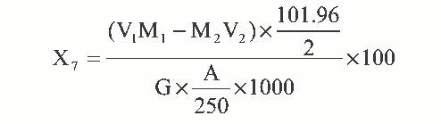

M1——EDTA 标准溶液的浓度，摩尔/升；
V1——加入 EDTA 标准溶液的体积，毫升；
V2——滴定消耗硫酸铜标准溶液的体积，毫升。
在络合滴定铁后的溶液中，加入过量 EDTA 标准溶液，调节溶液 pH=4.5，煮沸，使铝 与 EDTA 定量络合，以亚硝基 R 盐为指示剂，用硫酸铜标准溶液回滴过剩的 EDTA 标准溶 液。
1. 0.2%亚硝基 R 盐溶液： 1-亚硝基—2-萘酚—3， 6-二磺酸钠（ C10H5NNa2O8S2）。
2. pH=4.5 乙酸—乙酸铵缓冲溶液。称取 77g 乙酸铵（称准至 0.01g）溶于约 500mL 水中，加入 59mL 冰乙酸，用水稀释至
1000mL。
3. 0.01mol/L EDTA 标准溶液配制及标定同 4.2.9 项。
4. 0.01mol/L 硫酸铜标准溶液。
称取 2.495g 硫酸铜（ CuSO4·5H2O）溶于约 500mL 水中，加入 2～3 滴 浓硫酸，移入 1000mL 容量瓶中，用水稀释至刻度。
吸取 0.01mol/L EDTA 标准溶液 20mL，移入 250mL 锥形瓶中，加入约 50mL 水及 pH4.5 乙酸—乙酸铵缓冲溶液 20mL，加入 0.2%亚硝基 R 盐指示剂约 1mL，用 0.01mol/L 硫酸铜标 准溶液滴定至溶液由浅黄色变为黄绿色即为终点。
式中： M2——硫酸铜标准溶液的浓度，摩尔/升；
M1——EDTA 标准溶液的浓度，摩尔/升；
V1——加入 EDTA 标准溶液的体积，毫升；
V2——滴定消耗硫酸铜标准溶液的体积，毫升。
滴定管： 25mL。
1. 在测定三氧化二铁含量后的溶液中，准确加入 20mL0.01mol/L EDTA 标准溶
液，摇匀，加入 pH4.5 乙酸—乙酸铵缓冲溶液 20mL，于电炉上加热煮沸 5 分钟，取下冷却。
2. 加入 0.2%亚硝基 R 盐约 1mL，用 0.01mol/L 硫酸铜标准溶液滴定至溶液由浅
黄色变为黄绿色即为终点。
三氧化二铝的含量 X7（ %）， 按下式计算：

式中： M1——EDTA 标准溶液的浓度，摩尔/升；
V1——加入 EDTA 标准溶液的体积，毫升；
M2——硫酸铜标准溶液的浓度，摩尔/升；
V2——滴定消耗硫酸铜标准溶液的体积，毫升；
G——试样的重量，克；
A——测定三氧化二铁含量时吸取滤液的体积，毫升；
101． 96——三氧化二铝的摩尔质量，克/摩尔。
平行测定两结果差不大于 0.2%。
取平行测定两结果的算术平均值，作为垢样的三氧化二铝的含量。